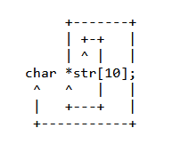
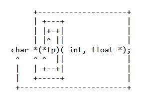

C++ primer ch3 - Strings, Vectors, and Arrays 阅读笔记
Posted onInprogrammingDisqus: Word count in article: 17kReading time ≈16 mins.
3.1 Namespace using
Declarations
A Separate using Declaration Is Required for Each Name. The important
part is that there must be a using declaration for each name we use, and
each declaration must end in a semicolon.
C++ Primer第五版只是介绍C++11，那时候还只能用using
declarations一个个声明需要的name，但是C++17已经支持comma-separated list
in using-declaration。
// EN p94 // process characters in s until we run out of characters or we hit a whitespace for (decltype(s.size()) index = 0; index != s.size() && !isspace(s[index]); ++index) s[index] = toupper(s[index]); // capitalize the current character
（但是以前从来没在意size_type，都是直接用int i循环了。）
3.2.3 Dealing with the
Characters in a string
ADVICE: USE THE
C++ VERSIONS OF C LIBRARY HEADERS
C++ library包含了C library。C
library里头文件是以name.h格式命名的，在C++
library里头文件则是用cname命名的。如ctype.h,
cctype。
C++ library头文件里的成员（函数名、变量名之类的）都是定义在std
namespace里的，而C
library则不是。所以在C++程序里推荐用C++版本的library，避免命名冲突。
Processing Only Some
Characters?
subscript operator (the [] operator): The result of
using an out-of-range subscript is undefined.
Processing Every
Character? Use Range-Based for
Range-Based for （range for statement):
1 2 3 4 5
// EN p91 string str("some string"); // print the characters in str one character to a line for (auto c : str) // for every char in str cout << c << endl; // print the current character followed by a newline
// EN p98 vector<int> ivec(10); // ten elements, each initialized to 0 vector<string> svec(10); // ten elements, each an empty string
List Initializer or Element
Count?
When we use curly braces, {...}, we’re saying that, if possible, we
want to list initialize the object. That is, if there is a way to use
the values inside the curly braces as a list of element initializers,
the class will do so. Only if it is not possible to list initialize the
object will the other ways to initialize the object be considered.
// EN p100 vector<string> v5{"hi"}; // list initialization: v5 has one element vector<string> v6("hi"); // error: can’t construct a vector from a string literal vector<string> v7{10}; // v7 has ten default-initialized elements vector<string> v8{10, "hi"}; // v8 has ten elements with value "hi"
The standard requires that vector implementations can efficiently add
elements at run time. Because vectors grow efficiently, it is often
unnecessary—and can result in poorer performance—to define a vector of a
specific size.
The operand of the built-in indirection operator must be pointer to
object or a pointer to function, and the result is the
lvalue referring to the object or function to which expr
points.
Programming
Implications of Adding Elements to a vector
range for 的body里不能改变正在被遍历的vector的size
3.3.3 Other vector
Operations
我们可以比较vectors，前提是两个vector的元素类型相同。
v1 == v2, v1 != v2: v1 and v2 are equal if
they have the same number of elements and each element in v1 is equal to
the corresponding element in v2.
<, <=, >, >=: Have their normal meanings
using dictionary ordering.
3.4 Introducing Iterators
Technically speaking, a string is not a container type, but string
supports many of the container operations.
*iter Returns a reference to the
element denoted by the iterator iter.
对iterator dereference得到的是reference！
iter1 == iter2, iter1 != iter2: Compares
two iterators for equality (inequality). Two iterators are equal if they
denote the same element or if they are the off-the-end iterator for the
same container.
两个iterator相等，意味着
要么他们指向相同的元素
要么他们是同一个container的off-the-end iterator
Moving Iterators
from One Element to Another
++iter Increments iter to refer to the next element in
the container.
--iter Decrements iter to refer to the previous element
in the container.
std library的container定义了它的iterator的类型：iterator
and const_iterator
1 2 3 4 5
// EN p108 vector<int>::iterator it; // it can read and write vector<int> elements string::iterator it2; // it2 can read and write characters in a string vector<int>::const_iterator it3; // it3 can read but not write elements string::const_iterator it4; // it4 can read but not write characters
// EN p109 vector<int> v; auto it3 = v.cbegin(); // it3 has type vector<int>::const_iterator
Combining Dereference
and Member Access
it->mem is a synonym for (*it).mem
Some vector
Operations Invalidate Iterators
任何改变vector size的操作都会使所有iterator失效（invalid）。
3.4.2 Iterator Arithmetic
string和vector的iterator支持一些额外的操作：
iter + n, iter - n: Adding (subtracting)
an integral value n to (from) an iterator yields an iterator that many
elements forward (backward) within the container. The resulting iterator
must denote elements in, or one past the end of, the same
container.
iter1 += n, iter1 -= n:
Compound-assignment for iterator addition and subtraction. Assigns to
iter1 the value of adding n to, or subtracting n from, iter1.
iter1 - iter2: Subtracting two iterators yields the
number that when added to the right-hand iterator yields the left-hand
iterator. The iterators must denote elements in, or one past the end of,
the same container.
>, >=, <, <=: Relational operators on
iterators. One iterator is less than another if it refers to an element
that appears in the container before the one referred to by the other
iterator. The iterators must denote elements in, or one past the end of,
the same container.
// EN p114 constunsigned sz = 3; int ia1[sz] = {0,1,2}; // array of three ints with values 0, 1, 2 int a2[] = {0, 1, 2}; // an array of dimension 3 int a3[5] = {0, 1, 2}; // equivalent to a3[] = {0, 1, 2, 0, 0} string a4[3] = {"hi", "bye"}; // same as a4[] = {"hi", "bye", ""} int a5[2] = {0,1,2}; // error: too many initializers
int a[] = {0, 1, 2}; // array of three ints int a2[] = a; // error: cannot initialize one array with another a2 = a; // error: cannot assign one array to another
Starting with the unknown element, move in a spiral/clockwise
direction; when ecountering the following elements replace them with the
corresponding english statements:
[X] or []
=> Array X size of... or Array undefined size of...
(type1, type2)
=> function passing type1 and type2 returning...
=> pointer(s) to...
Keep doing this in a spiral/clockwise direction until all tokens have
been covered.
Always resolve anything in parenthesis first!
Example #1: Simple declaration

picture 0
Question we ask ourselves: What is str?
str is an...
We move in a spiral clockwise direction starting with
str and the first character we see is a [ so,
that means we have an array, so...
`str` is an array 10 of...
Continue in a spiral clockwise direction, and the next thing we
encounter is the * so, that means we have pointers,
so...
`str` is an array 10 of pointers to...
Continue in a spiral direction and we see the end of the line (the
;), so keep going and we get to the type char,
so...
`str` is an array 10 of pointers to `char`
We have now "visited" every token; therefore we are done!
Example #2: Pointer to Function declaration

picture 1
Question we ask ourselves: What is fp?
`fp` is a...
Moving in a spiral clockwise direction, the first thing we see is a `)`; therefore, fp is inside parenthesis, so we continue the spiral inside the parenthesis and the next character seen is the `*`, so...
`fp` is a pointer to...
We are now out of the parenthesis and continuing in a spiral clockwise direction, we see the `(`; therefore, we have a function, so...
`fp` is a pointer to a function passing an int and a pointer to float returning...
Continuing in a spiral fashion, we then see the `*` character, so...
`fp` is a pointer to a function passing an int and a pointer to float returning a pointer to...
Continuing in a spiral fashion we see the `;`, but we haven't visited all tokens, so we continue and finally get to the type `char`, so...
`fp` is a pointer to a function passing an int and a pointer to float returning a pointer to a `char`
when we use an object of array type, we are really using a pointer to
the first element in that array.
1 2 3 4
// EN p117 string nums[] = {"one", "two", "three"}; // array of strings string *p = &nums[0]; // p points to the first element in nums string *p2 = nums; // equivalent to p2 = &nums[0]
当我们用array作为初始值，用auto定义一个变量的时候，编译器推断变量的类型是pointer。
1 2 3 4 5 6
// EN p117 int ia[] = {0,1,2,3,4,5,6,7,8,9}; // ia is an array of ten ints autoia2(ia); // ia2 is an int* that points to the first element in ia
// the following is equivalent to the above autoia2(&ia[0]); // now it’s clear that ia2 has type int*
但是如果用decltype，推断的类型不会发生转换，还是array。
1 2 3 4 5
// EN p118 // ia3 is an array of ten ints decltype(ia) ia3 = {0,1,2,3,4,5,6,7,8,9}; ia3 = p; // error: can’t assign an int* to an array ia3[4] = i; // ok: assigns the value of i to an element in ia3
// EN p118 int ia[] = {0,1,2,3,4,5,6,7,8,9}; // ia is an array of ten ints int *beg = begin(ia); // pointer to the first element in ia int *last = end(ia); // pointer one past the last element in ia
int ia[] = {0,2,4,6,8}; // array with 5 elements of type int int i = ia[2]; // ia is converted to a pointer to the first element in ia // ia[2] fetches the element to which (ia + 2) points int *p = ia; // p points to the first element in ia i = *(p + 2); // equivalent to i = ia[2]
int *p = &ia[2]; // p points to the element indexed by 2 int j = p[1]; // p[1] is equivalent to *(p + 1), // p[1] is the same element as ia[3] int k = p[-2]; // p[-2] is the same element as ia[0]
3.5.4 C-Style Character Strings
Although C++ supports C-style strings, they should not be used by C++
programs. C-style strings are a surprisingly rich source of bugs and are
the root cause of many security problems. They’re also harder to
use!
不推荐在C++程序里使用C-style字符串。
C-stlye
string是一个convention，这个convention是指怎样去表示和使用character
strings。遵循这个convention的string，使用character array，并以null
character （\0）结尾。
C Library String Functions
strlen(p) Returns the length of p, not counting the
null.
strcmp(p1, p2) Compares p1 and p2 for equality. Returns
0 if p1 == p2, a positive value if p1 > p2, a negative value if p1
< p2.
string s("Hello World"); // s holds Hello World constchar *str = s.c_str(); // ok
Using an Array to
Initialize a vector
1 2 3 4 5 6 7
// EN p125 int int_arr[] = {0, 1, 2, 3, 4, 5}; // ivec has six elements; each is a copy of the corresponding element in int_arr vector<int> ivec(begin(int_arr), end(int_arr));
Modern C++ programs should use vectors and iterators instead of
built-in arrays and pointers, and use strings rather than C-style
array-based character strings.
3.6 Multidimensional Arrays
subscript的数量没有限制
1 2
int arr[10][20][30] = {0}; // initialize all elements to 0 // int arr1[1][2][3][4]...
a two-dimensional array, the first dimension is usually referred to
as the row and the second as the
column.
Initializing
the Elements of a Multidimensional Array
多维数组的初始化，可以用多层list，也可以不用
1 2 3 4 5 6 7 8 9
// EN p 126 int ia[3][4] = { // three elements; each element is an array of size 4 {0, 1, 2, 3}, // initializers for the row indexed by 0 {4, 5, 6, 7}, // initializers for the row indexed by 1 {8, 9, 10, 11} // initializers for the row indexed by 2 };
// equivalent initialization without the optional nested braces for each row int ia[3][4] = {0,1,2,3,4,5,6,7,8,9,10,11};
// explicitly initialize only element 0 in each row int ia[3][4] = {{ 0 }, { 4 }, { 8 }};
// explicitly initialize row 0; the remaining elements are value initialized int ix[3][4] = {0, 3, 6, 9};
Subscripting a
Multidimensional Array
如果提供的subscript数量少于定义数组时给的dimension，那么得到的会是内部的数组。
1 2 3 4
// EN p127 // assigns the first element of arr to the last element in the last row of ia ia[2][3] = arr[0][0][0]; int (&row)[4] = ia[1]; // binds row to the second four-element array in ia
Using a Range
for with Multidimensional Arrays
如果使用range based
for遍历多维数组，那么除了最内层的array，外层的for循环都必须用reference
1 2 3
for (auto &row : ia) // for every element in the outer array for (auto col : row) // for every element in the inner array cout << col << endl;
a multidimensional array is really an array of arrays, the pointer
type to which the array converts is a pointer to the first inner
array:
1 2 3 4
// EN p129 int ia[3][4]; // array of size 3; each element is an array of ints of size 4 int (*p)[4] = ia; // p points to an array of four ints p = &ia[2]; // p now points to the last element in ia